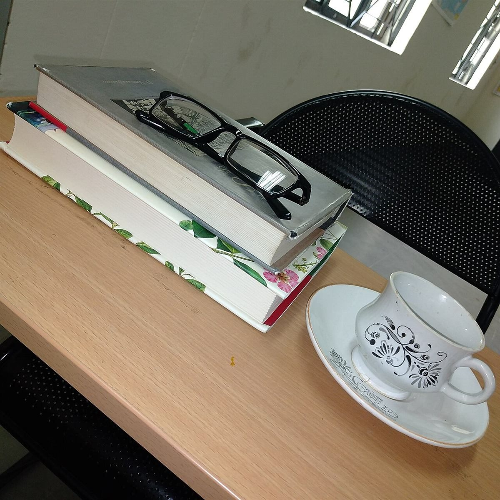

ひとりで入っても、ひとりのままでいられる感じがしました。誰かに合わせなくていいと思えて、帰るころには気持ちが少し軽くなっていました。
口コミ
VOICE
下の3件は、制作側が想像で書いたイメージ例です。実在のお客様の投稿ではありません。
制作側の創作です。実際のお客様の声ではなく、お店の品揃え・設備・立地などを示すものでもありません。
店名が気になって立ち寄りました。座ってしばらくぼんやりしていたら、今日は何を考えたかったのか、少しだけ見えてきた気がします。
帰りに、手帳の空いているところへ一行だけ書き足しました。そんなことをしたくなる時間でした。また行きたいです。
